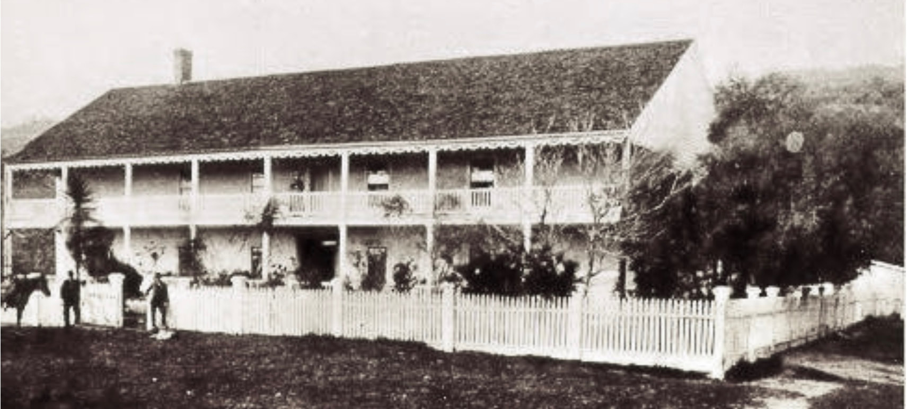
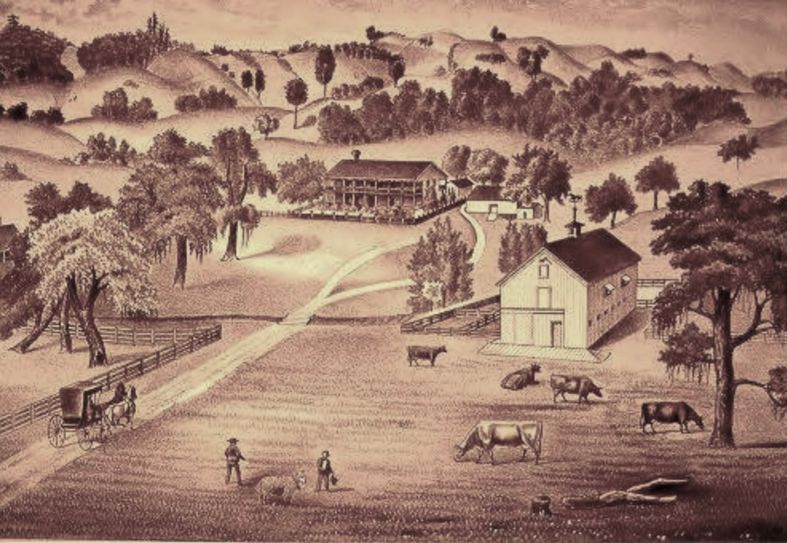

Cyrus Alexander and the Rancho Sotoyome
© 2020 Hannah Clayborn All Rights Reserved
|
In 1840 a failed Rocky Mountain fur trapper rode west through narrow valleys of waist-high wild oats and ancient oak groves. Cyrus Alexander headed for a river, the Russian River, named for a colonial Russian fort built near its mouth a generation before.
The ex-trapper was on a scouting expedition for his employer, a wealthy San Diego trader and expatriate American named H.D. Fitch. Fitch hoped Alexander would find enough unclaimed land north of San Francisco Bay to serve as stock range for his cattle. Alexander hoped that he would have a chance to earn a piece of that land for himself. Cyrus had a habit of traveling light. When he left San Diego he took his best horse and saddle, a heavy blanket, a pair of large Mexican spurs, his gun, and some jerked beef. It had been a long journey. His first stop north of the Bay was a large and beautiful valley, later named Napa. An American, George Yount ,and an Englishman, Edward Bale, had already claimed it. Heading through the Napa Valley, he struck out for the Russian River by way of Sonoma and the old trail along the foothills north to the Mark West land grant. Now Alexander rode into a beautiful valley. As he would later say, this place seemed to him the brightest and best spot in the world, and they would later give it his name. Here he met the river those Russians had affectionately called "Young Girl," or Slavyanka, that slithered its way 110 miles from a range of hills in the north to the Pacific Ocean. He followed it south and then west as it snaked its way around the base of a small timbered mountain. Then he saw it head out across another great meandering valley that would later be named after the river itself. (1) 
European visitors to California often compared the California oak savannas on the valley floors to English parks. South Santa Clara Valley c. 1900
These valleys that radiated like branches of the massive oaks that shaded them, seemed well suited for a cattle ranch. Creeks and streams flowed down the wooded hills to empty into the great waterway. In places natural springs bubbled right from the rocks. The whispering, undulating fields of wild oats and clover lay waiting for the snorting half-wild herds of cattle that Fitch could bring.
Most importantly, here Alexander met a remnant of earlier settlers in the valley. Cyrus called them Diggers, or Digger Indians. Ravaged and scattered as they were by the Mexican soldiers and disease, they looked primitive and bestial to Alexander. Now there were several hundred where once there had been several thousand. But they spoke a form of Spanish that Alexander could understand and these survivors had backs and legs and arms to plant and harvest, dig and carry adobe brick, and tend his cattle. In exchange he would kill game for them or provide some other food or cast-off clothing, and perhaps protect them from their enemies.(2) Cyrus sent back a flattering report of the area to Captain Fitch. He called it the Rancho Sotoyome in honor of a now largely vanished group of Indians who had once ruled the smaller valley. The Mexicans called them Satiyomis or Sotoyomes. They also nicknamed them Guapas, meaning handsome or brave, which the new settlers mispronounced as Wappos.(3) Finally, at the age of 35, Cyrus was on the trail that would bring him his long-sought fortune. A Life of Adventure
Cyrus Alexander had come a long way since he first left home, just 16 miles from the outpost of St. Louis. Born in Pennsylvania in 1805, Cyrus was the second to youngest of eight children. His father, David, moved the family to what was then the frontier of Illinois in 1810. He was a sickly child, but those illnesses saved him from much of the hard farm work and gave him the opportunity to read. Alexander favored tales about the lives of adventurers. As he reached adulthood Cyrus learned the tanning trade from an older brother, as well as shoemaking. Later another brother taught him about the management and machinery of a flour mill. All of these skills would later serve him well on the California frontier. His own life of adventure began at the age of 22 when he traveled 400 miles to make a fortune at the lead mines near Galena, Illinois. That venture disappointed him. Then Alexander read about the lucrative fur trade between St. Louis and the Rocky Mountains and Oregon Territory. In the spring of 1831 he became an independent agent, trapping for the Sublette Fur Co. Cyrus' colorful trapper partners, "Black" Harris and "White" Cotton, soon nicknamed him Aleck. The trio set off after otter and beaver up the Yellowstone River.(4) After their first season of trapping, valuable otter and beaver pelts were piled high in camp. The Blackfeet Indians, viewing the trappers as invaders in their territory, took the precious furs. It seems generous of the Black Feet that they spared the trappers' lives and even left them their traps and guns.(5) Cyrus and his partners wintered in a crude little cabin. Since a large herd of buffalo also wintered in the same valley, the men were able to shoot the beasts from their front door. 
Trappers Escaping from Blackfeet, by Alfred Jacob Miller;
(Beinecke Rare Book and Manuscript Library,
Yale University)
During their second trapping season, the trio met with even worse luck. While Aleck and Black were out on a hunt, the Indians once again came to call at camp. This time the Blackfeet took both furs and the life of White Cotton, shot dead while dressing a skin.
The survivors headed off towards Santa Fe to rejoin a larger Sublette Fur Company group. On the way they survived by killing bears for food. Despite their misfortunes and diet, which consisted almost exclusively of roasted meat, the once delicate Alexander had gained robust health.(6) . After reaching the large company in Santa Fe, they chose a new man, Thomas Long Smith, to replace their murdered friend. Resolving to redeem the rest of the hunting season, they set out into what seemed like game-laden territory and so they failed to bring along provisions. Soon the trappers faced another grim predator, starvation. They survived at one critical point by eating goslings just ready to hatch, found in the hollow of a tree . Despite the hardships in reaching their destination, they ended their second season with another impressive cache of pelts. Probably just biding their time, the Blackfeet promptly repossessed them. Historians might begin to guess that the Indians found Alexander and Company a convenient source of furs, for once again, the hunters were generously spared their lives, their traps, and their guns. Forced to Eat Their Pet
The company decided to try one more season before giving up trapping altogether. With winter coming on they headed back towards the large Sublette group. Once more left with no provisions and only three rifle charges between them, the men were forced to eat their pet dog, Watch, on the way. When they met the main party of trappers they found a drunken celebration, known in the mountains as a rendezvous, already in progress. One of the revelers accidentally shot Thomas Smith, the new man, in the knee. The resulting amputation gave him a new nickname, Pegleg Smith. Although Pegleg later became a Western legend, and claimed that his missing part was the fault of an Indian attack, at that time he was unfit for a season of trapping, and was replaced. 
Kane Big Snake, Chief of the Blackfoot Indians; (National Gallery of Canada)
In the spring the hunters began a third season, this time in the Black Hills of northeastern Wyoming. Here they trapped enough animals to produce $1,000 worth of pelts by season's end (equivalent to $30,800 in 2020). This time, to avoid the Blackfeet and to catch up to the main party, the hunters followed the Green River to the Colorado, then came down the Colorado to a point near the Gulf of California where Sublette had a fort. But when they arrived they found the company had already moved on to Santa Fe.
In a hurry to join them, Aleck and his partners decided to attempt a dangerous crossing of the upper part of the Gulf of California. The Indians at the fort warned him of the danger, but loaned them a canoe anyway. Three of the Indians even came along to help row. Once out on the water, a heavy snowstorm began to blow and they discovered that the canoe was too heavily loaded. As they tried to turn the canoe around to head back to shore, it capsized, plunging all into icy water. The good swimmers in the group (two Indians and one white man) set out for the shore. They were never seen again. Alexander and the rest clung to the overturned canoe and, after an agonizing day of drifting in the Gulf amidst chunks of floating snow, they finally came to shore that evening near where they had started. Amazingly, the nearly frozen party recovered. Their guns and traps, however, had sunk to the bottom, and the treasured pelts had floated out to sea.(7)  Aleut Alaskan Natives did most of the seal and otter hunting for Russian companies. Hunters spent long stretches at sea. Otters were nearly extinct on the coast by 1840. (Library of Congress) Aleut Alaskan Natives did most of the seal and otter hunting for Russian companies. Hunters spent long stretches at sea. Otters were nearly extinct on the coast by 1840. (Library of Congress)
Penniless and Peltless
In 1833 Cyrus Alexander, now 28 years old, arrived penniless and peltless in the Mexican port of San Diego.(8) He had nothing but his worn mountaineer's clothing. To get a new wardrobe he hired himself out for wages at $12 a month.($370 a month in 2020) His first job was to tear up the hull of a shipwreck.(9) Finally, after years in the wilds with no word to his family in Illinois, he sent the following letter: Dear Brother. My trapping expedition is an entire failure, all lost. I am now in Lower California. I like it here very well; I am not coming home until I make something. I think there is a fortune for me somewhere, and I am going after it. I am well and hearty, think this a better country than Illinois. And will stop here awhile. Your Brother. Cyrus Alexander. (10) During the seven years he spent in San Diego after writing this letter, Alexander tried a number of occupations. At one point he found a job hunting sea lion and otters for Captain Fitch, and it is presumed that this is how the two first met. One account, however, states that soon after his arrival in San Diego, Alexander happened by the Fitch Adobe when one of the Fitch children fell into a nearby river. Hearing her screams, Alexander pulled her out of the water.(11) According to his biographer, Alexander slew them [otter and sea lion] by the wholesale, and they soon became scarce wild and shy. Then he tried making soap. Neither of these seemed likely to bring a fortune. Like all Americans in California in that era, Alexander also learned to speak Spanish.(12) Rancho Sotoyome
In 1840, almost a decade after he left his Illinois farm to seek his fortune, Cyrus Alexander found himself on the Frontera del Norte. the northern frontier of Mexican California. He would start again as the manager of Captain Fitch's new venture, the 48,800-acre Rancho Sotoyome. Alexander, making use mainly of the local Indian population, would supply the labor. Captain Fitch would supply the capital, sheep and cattle, tools, and other necessary materials. By agreement Alexander would receive one half of the increase of the livestock herds, and half of the crops grown. After four years he would also receive a two-league portion of the rancho as payment for his services. This roughly 8,800 acre parcel was probably the first part of the rancho that Alexander saw when he wound his way out of Knights Valley in 1840. It was the place that he said was the brightest and best spot in the world, the place that would become known as Alexander Valley. As soon as his busy schedule permitted, late in the year 1840, Fitch began the long process of filing a petition for his northern grant. He would not be officially granted an eight-league parcel by the Mexican government until September 28, 1841. By that time Alexander had been living and working on the property for over a year. Fitch officially received another three-league parcel in 1844, bringing his total acreage to about 48,800. Captain Fitch came north from San Diego to visit the rancho on several occasions, the first probably to oversee a survey of the land. Such a survey, carried out by local officials on horseback, pinpointed the locations of notable land formations and improvements. Grantees had certain legal obligations to fulfill to qualify for such grants of land. Cyrus Alexander saw to most of these, including the construction of a dwelling and planting orchards. Cyrus would soon exceed any governmental requirement by establishing a grist mill (said by one to be the first in northern California), a tannery at the base of Fitch Mountain (said by another to be the first in California), and a profitable cigarette-rolling industry, with tobacco supplied by Captain Fitch.(13) 
Method-of-Catching-Cattle in Mexican California;-from-Alexander-Forbes,
Fraternity of Former Trappers
Although he had the Wappo and Pomo-speaking Indians to supply labor, and the Vallejo and Carrillo families were less than a day's ride away, Alexander relied largely on his own ingenuity. In the first year or two, his nephew biographer, Charles Alexander, tells us, he led a very solitary existence. His nephew does not mention that a 15-year-old Mexican named Jose German Piña joined him in the area in 1841. Piña, with the help of his family, established a rancho, known as the Tzabaco, in the present Dry Creek Valley. German Piña received an official grant of roughly 17,000 acres there in 1843, when he was 18 years old. (14) There may have been only minimal contact between Cyrus and his Mexican neighbors, however, and he probably missed the camaraderie of his old American trapper friends. The fraternity of former Rocky Mountain trappers was strong in California, and over the years several of these adventuring men found their way to the Russian River ranch. The first of these was Franklin Bedwell, who came to see Cyrus in 1842 or 1843. Bedwell was headed for Oregon, but became sick in Sacramento. After locating his friend on the Russian River, Bedwell stayed on to work. Alexander offered him an arrangement similar to the one he himself had with Captain Fitch. At the end of two years of work Alexander would give Bedwell 500 acres of his own land. Bedwell remained with Cyrus, as it turned out, until 1850, long after he had earned the 500 acres that he continued to farm for the rest of his life.(15) Significantly noting only the English-speaking settlers in the area in the 1840's, Cyrus's biographer lists the following: J.B. Cooper in Bodega; Mark West of the San Miguel Rancho several miles to the south; Bale and Yount of Napa, and Captain John Sutter of Sacramento. Finally, he lists Mr. William Gordon of Cache Creek in what later became Yolo County, about 100 miles east. Once again the fraternity of ex-trappers became important, for the neighbor that Alexander visited most often was Gordon, a former hunter and trapper himself. Gordon's ranch in Yolo County became a general rendezvous for settlers and trappers in this era. But for Cyrus there was another attraction on Cache Creek, a certain 13-year-old girl named Rufina Lucero.  Pioneer Redwood log cabin, Golden Gate Park in 1898, (UCB Bancroft Library) Pioneer Redwood log cabin, Golden Gate Park in 1898, (UCB Bancroft Library)
Teenage Bride
Rufina was the sister of William Gordon's wife, Maria. Born in Mora, New Mexico, to Pedro Lucero and Maria de la Luz Pinos in May of 1830, she had come with the Gordon's to California in 1841. Each trip from the Sotoyome Rancho to the Gordon ranch was about 200 miles round trip, so Alexander had to streamline his courtship. He married Rufina, then just 14 years old, in December 1844. Alexander was nearing middle age at 40 years old. Captain Sutter of Sacramento officiated and Gordon hosted a traditional dance and feast. A three-day ride finally brought the bride to her new home on the Russian River.(16) When Cyrus first settled on the Rancho Sotoyome in 1840, he had built a small redwood cabin. Lacking tools and nails, he managed to set the rough timbers into grooves cut into sills and plates, and tied what needed fastening with rawhide. The only milled lumber used in the structure consisted of two planks that he had bought in the pueblo of Sonoma, the nearest settlement about 35 miles away. Cyrus used these for his front, and probably only, door. A reliable local source indicates that the site of this first cabin was on the north side of the Russian River, where a municipal pumping plant was later placed along North Fitch Mountain Road (now the site of a Senior Citizen's Housing Project).(17) Sometime in the early 1840's Cyrus also began to work on a larger house for Captain Fitch, now the site of Brandt Lane off Bailhache Avenue. Under his supervision, the local Indians cut and fashioned large oblong adobe bricks and dried them in the sun. When stacked, these became the walls.(18) When Alexander left Fitch's employ in 1845, that extensive structure was still incomplete, as the following letter from Captain Fitch in San Diego, dated July 14, 1845, shows: Mr. Cyrus Alexander Dear Sir. Yours of March 25th I did not receive until the 27th of last month. I am sorry to learn that you intend to leave the Rancho in October next, consequently I have made arrangements with Mr. Moses Carson [brother of the famous Kit Carson] to take charge of the Rancho, with all my interest in the same; and have given him orders to that effect. Whatever articles I sent you, such as farming utensils, carpenter tools etc, that you do not wish to keep, I will take back at the same price, provided they are not too much damaged by wear. The two large whaler's tripods, the winnowing machine, and the American cartwheels I never considered as sold to you, but delivered them to be used on the rancho. I expect you to leave them, also the large auger, Grist mill spindle and tire, logchain, screw-plates, and other Iron-and-steel ware sent in 1843, too numerous to mention, such as locks, hinges etc. I told Mr. Carson that in case you wished to deliver anything he considered not receivable, to give you a receipt and to retain them as on deposit. I hope you have received the 300 head of cattle from Pico and those from Marco Baco and Pacheva [Pacheco?] and have taken them to your part of the Rancho; in that case you will deliver all of my cattle to Mr. Carson, and I will settle all differences when I come up. There were 250 head of sheep; after making the old stock good, you will please divide the increase, and deliver my share to Mr. Carson; you will also deliver to him one half of the wool, and one half of all the grain raised. I have been disappointed in not receiving a letter from you sooner; you said nothing about the crops. You stated that you had sent me fifteen fanagas [about 15 bushels], one of beans, eight of wheat. I expected more beans and corn, and I have not received even that small lot. There must be some neglect somewhere. I have not had a bean in my house for two months. I requested Mr. Carson to ship me some from the Rancho in case there were any there. You will please advise and assist Mr. Carson; in so doing you will oblige me. As to the new house, I hope you have the walls up, and as to the boards and shingles, I do not care to engage any more, but will attend to that myself. Wishing every success, I remain, Yours truly H.D. Fitch P.S. According to my account, I have forwarded to you from Nov. 1841 to Nov. 1843 the following number of cattle viz: 39 oxen, 4 tame cows, 149 cows de rodeo, 468 barquates [probably heifers], large and small, 45 nobeds [young bulls or oxen], 64 bulls, 65 barquas [cows], 88 head of cattle from Raphel Garcio; Mr. Leice [Leese] delivered 922 head; Mr. Larkins delivered some since. In 1842 I put 22 tame horses, 3 tame mares, 4 wild mares, 4 macheos [mules], and 1 colt. I have the papers of the Rancho approved by the assembly, and think all will be correct. Respectfully H.D. Fitch (19) The "whaler's tripods" mentioned in the letter were large iron cauldrons with three legs, used for rendering tallow. The American cartwheels may have been the first of their type in Sonoma County. They differed from the Mexican cartwheel by virtue of iron banding on the outside.(20) Whether iron banded or not, however, such wheels often sunk deep into the mud whenever it rained. Alexander's first trip to Sonoma to get supplies in 1840 came to a halt when his old Mexican-style cart became mired to its axle during a downpour. Stranded on the clay plains of the Santa Rosa Valley, he had to wait until the weather cleared, when the Indians helped dig him out.  Adobe outbuilding on Alexander Ranch in 1964, (Sonoma County Library) Adobe outbuilding on Alexander Ranch in 1964, (Sonoma County Library)
A Home of Their Own
Alexander left Fitch's employ in October 1845. He and his bride, now with a new baby, loaded the ox cart with their possessions and moved to the lovely valley that to him was the brightest and best. He received official title to his Alexander Valley ranch in September 1847, when he was 42 years old. As he had on Fitch's land several years previously, Alexander first built a redwood cabin in Alexander Valley in 1845. He chose a small eminence where a large spring flowed down the hillside. In the summer of 1846 or in 1847 (sources differ), Cyrus and the Indian laborers started work on a second adobe adobe house for his own family. Only part of the structure was intended for use as a residence; there were also storerooms for wheat, wool, and hides, and even a part solely for his friend and employee, Frank Bedwell.(21) Sometime during that period they also built a separate adobe outbuilding, portions of which still stand on the property.(22) In addition to her many other duties, teenage Rufina also spun her own yarn from rolls of wool that came from San Diego, and presumably, from their own herds of sheep. She would sit with her spindle resting in a smooth earthen bowl, twisting enough yarn in a day for a pair of socks. Cyrus built her a loom in 1847. Because of the War with Mexico, however, he could not get a reed to complete it until several years later. Cyrus also built his hardworking young wife a brick oven. Second Honeymoon
All went well on the Alexander ranch that first year until the pioneer couple received word from a padre at the Santa Clara Mission that they were not married in the eyes of the Catholic Church. The marriage ceremony performed three years previously by Captain Sutter at his fort lacked divine authority, and they were required to go to Santa Clara to rectify the situation. Three other couples in the region, also married by Sutter, received similar commands. One couple, Mr. and Mrs. Nathan Combs, decided to ignore the order. Cyrus later claimed that Combs simply had no shoes for he and his wife to wear to Santa Clara. The Alexanders eventually joined with the other two couples to make the trip, but first Alexander went to a great deal of trouble to outfit himself and his wife. Luckily Cyrus had operated a primitive tannery at the base of Sotoyome Mountain (now Fitch Mountain) since about 1844. Using tan bark from the trees west of the current town of Healdsburg, Alexander, who until that time had worn moccasins, made shoes for himself, and he shipped some pairs for sale to Captain Sutter. Now with a wedding imminent, he picked out some of his best tanned hides to make Rufina a pair of wedding shoes. Thereafter fitting up as good a wedding suit as they could muster at the time, they headed off to the mission at Santa Clara about 120 miles away. Although the three imperfectly wedded couples had an enjoyable excursion, the second wedding cost Alexander $300―all the cash he had managed to save in the last seven years. He never forgave the priests for forcing the expensive wedding or himself for heeding them. As he explained later, ...what could I do; here I was alone under the Priest's rule, with Indians, and I thought it not safe to rebel. .(23) 
Mission Santa Clara de Assis in the early 1850s. Cyrus and Rufena were married here by a priest in 1847.
Bear Flaggers and Indian Raiders
If he had known there would soon be a change in government, Alexander would certainly have ignored the edict. Not long after they returned from their wedding trip more trouble began on the rancho. Though they were only a day's ride from the military outpost of Sonoma, Alexander and his family seemed sufficiently isolated from the conflicts surrounding the short War between Mexico and the United States. Until 1847, when the United States set up a provisional government, Alexander's main inconvenience was an inability to get certain goods, like the reed for his wife's loom. The closest the conflict between the United States and Mexico came to the Russian River Valley was in June 1846 during the incident known as the Bear Flag Revolt. in the pueblo of Sonoma. In that month two Bear Flaggers, Thomas Cowie and George Fowler, were sent to see Mose Carson at Captain Fitch's rancho, with orders to get a keg of gunpowder stored there. A party of Californios (Mexican Californians) captured and killed the pair en route near Santa Rosa. One of the Californios was Jose Ramon Carrillo, Captain Fitch's brother-in-law. Other Bear Flaggers got the powder from Rancho Sotoyome a day or two later, but the Cowie-Fowler murders have been retold, dissected, and speculated upon ever since..(24) Later in the year 1846, the American forces commandeered 29 horses from Captain Fitch's rancho. Because of the resulting lack of horses, ranch manager Mose Carson was unable to round up and count the cattle that season..(25) Alexander's main problem on his land during this era was with the Indians who had once been his labor force. The Wappo and Pomo-speaking peoples hoped that the battle between the two groups of white men might bring the return of some of their ancestral lands. According to Alexander, the Indians now ran off his cattle and stole his grain. At night the Indians would prowl around the settler's houses, just out of rifle shot. The settlers fortified their houses with the addition of wooden shutters made of live oak, through which arrows could not penetrate. Finally, in 1848, the dangerous situation forced Cyrus to saddle up two horses under cover of darkness. On one he put his wife and child, on the other he put a little girl who was his wife's niece. Next morning they reached the safety of the presidio at Sonoma..(26) While at Sonoma Alexander met two of his nephews from Illinois. Hearing nothing of their Uncle Cyrus since that succinct letter he sent from San Diego in 1834, they spotted him only by the family resemblance. The nephews, William Hughes and Risdon Moore, had come with General Fremont to California in 1845, and were now stationed for a short time at Sonoma. For the first time in 17 years Cyrus heard of the fate of his friends and loved ones in St. Clair County, Illinois. A frontier itself when he left it, St. Clair was now a settled community. Cyrus learned from his nephews that his mother had been dead for sixteen years. Following this encounter Alexander had no further contact with his family until another nephew, Charles Alexander, came to live near him on the Russian River in 1850. Charles would later write his uncle's biography..(27) No mention is ever made of Cyrus's father in this biography (we do not even see his name, which was David). One wonders if the 14 years of silence from Cyrus, during which he never once tried to contact his parents, indicates some family conflict. Cyrus and his family remained protected at Sonoma for several months. The Indians, now dependent on the American settlers for food, soon ended the hostilities. Cyrus began to make trips up to his land to check on its condition. Finding the Indians in a calmer state, his working visits to the ranch became more regular. When all hostilities ended, the Alexander family returned to their home. When Cyrus Alexander arrived in Alexander Valley, he found up to 200 native people living there. They were the remaining members of the Wappo (or Guapo) tribe, meaning handsome or brave in Spanish. Also known by other names, including Satiyomi and Sotoyome, these people also may have inhabited the Dry Creek Valley as well as Alexander Valley at one time. According to a native website, in 1851, there were approximately 8,000 Wappo Indians, who occupied the great valleys of Sonoma and Napa Counties, including Alexander, Knights, and Napa Valleys, expanding from the headwaters of the Russian River to the basin of San Pablo Bay. |

The Presidio, Church of San Francisco de Solano, and shops at the pueblo of Sonoma, drawn by George Gibbs, August 11, 1851. Cyrus and his family took refuge here from an uprising of the Wappo tribe in 1848.
|
|
Alexander Adobe: Pigs for Lumber
Upon their return, work resumed on the large adobe house, the Indians making more of the large rectangular adobe bricks that made up the two-foot thick walls. The finished structure was 80 feet long, 20 feet wide and 12 feet high. After William March and Samuel Heald established their pioneer sawmill on Mill Creek in 1850, Alexander contracted for a large wooden barn. There were now more settlers in the area, so he employed a carpenter to build it and then added a wooden second story on his original adobe. Since pigs were worth $75 each and sawed lumber was going for $75 per 1,000 board feet, Cyrus traded pigs for the wood. The entire project cost him about 11 pigs..(28) Captain Fitch had originally contracted with William March for the construction of that pioneer sawmill in 1847. This mill was meant to provide wooden shingles and sawed lumber for his own large adobe house.(29) The mill was apparently still unfinished at the time of Fitch's death in 1849. Construction may also have been delayed because of the Gold Rush. |

Alexander Adobe as it looked in 1880. Lower story of adobe bricks; upper story of milled lumber.
 Cyrus belatedly joins the rush for gold; Miners in 1850 Cyrus belatedly joins the rush for gold; Miners in 1850
Tales of Instant Fortune
Most men in the area made at least one trip to the gold mines between 1848 and 1852. Cyrus Alexander was no exception. He held out against gold fever for the first two years, but in 1850, the tales of instant fortune overcame him. He set off for the mines, leaving Rufina, only twenty years old with small children, to supervise the ranch. Alexander worked hard at the mines, first on the American and Sacramento Rivers, then on the Yuba. Finally he went with a group to the Feather River. But for all his labor he had no luck, and finally sold his tools and set out for home after coming down with another, more tangible fever. He did not leave his Alexander Valley ranch for any extended length of time for the rest of his life..(30) Although he failed as a miner, Alexander made his first ready cash during the Gold Rush by selling food to the hungry miners. Suddenly there was a huge market for his produce and livestock, often paid for with gold dust. In 1850 he cleared $1,200 profit on one crop of onions freighted to the gold camps by oxcart. In the same year a passing drover en route to the mines paid him $1,000 for twenty hogs. He got $16 a head for his sheep.(31) Grizzlies Roamed the Valleys In his early years on the rancho Cyrus still hunted a great deal. In place of beaver or otter, he tracked and killed the large predators, mountain lion and cougar, coyotes, and bears that sometimes killed his stock. Using a combination of traps and poison, he was able to kill as many as half a dozen large predators in a single night. He seemed especially fond of hunting the grizzlies that still roamed the valleys. Alexander was quoted about one such encounter in the early 1840's: I was out one afternoon on Dry Creek; it was quite warm, and I felt it was a good time to see a bear; sure enough, I had not been out long when I saw a large Grizzly feeding on the clover; I concluded to have him if possible. There was a large white oak near him. I crept quietly up to this and stood watching the old fellow; soon I had a good chance and fired. Down he tumbled, making a terrible fuss. I stood still, looking at him; suddenly he rose up, sitting on his hind parts, and trying to find where his enemy was. I could not load again for fear he would see me; suddenly he came down on his feet and made straight for the tree; as he came up on one side, I stepped around, thus keeping out of sight. He came near enough to the tree to stumble over its roots, and so near to me that I could see him wink. Not seeing anything he passed on. That was one time I did not shoot hard enough, and so lost my game. It did not matter much as I soon found another which I killed.(32)
 The Rocky Mountain trapper and grizzly hunter became a respected businessman with cash to spare. The Rocky Mountain trapper and grizzly hunter became a respected businessman with cash to spare.
Alexander the Moneylender
Settlers and squatters began to overrun the entire area by 1852. Cyrus was one of the first of the large landowners to realize the futility of retaining all of his land. In that year he subdivided and sold off most of his acreage, keeping only two reserves. One of those reserves was his own homestead, the other a 600 acre parcel that he fenced and rented to other farmers. Alexander seemed to welcome most of his new neighbors, and made his home available as a meeting place for the new settlers. Rev. A.L.S. Bateman, a pioneer Methodist minister, held his services in 1852 in the best room of Alexander's adobe. Bateman built a church and Sunday school in the Valley the next year. That church also became the first regular day school, but when its location did not seem central enough, Cyrus built a schoolhouse on his own land. At his own expense, he helped employ teachers and maintain the school that was known as Pine Grove in the 1870's.(33) Sale of stock, produce, and land finally brought Alexander the cash that he had lacked all of his adult life. Now that he had it, he began to lend that money out to the settlers. One of his first loans, in the mid-1850's, was to the fledgling Methodist Church to build a house of worship on the Healdsburg Plaza (now Matheson Street). When the Methodists could not repay that loan Cyrus, who had since become friendly with the new Presbyterian congregation, presented the Church to the latter group. As may be imagined this created a controversy in the pioneer community. Alexander also lent money to the first private school in the town of Healdsburg. This school, first known as the Russian River Institute, became the Agricultural and Mechanical University of California in 1859, at which time it was taken over by an enthusiastic group of Healdsburg citizens. Throughout its history it had serious financial problems, and finally closed in 1867 with the name Sotoyome Institute. Now Alexander had a foreclosed school property on his hands, and this he also transferred to the Presbyterian Church. For a few years thereafter it was run as the Alexander Academy in his honor. Understandably the Presbyterians, especially Reverend James Woods who eventually received a free farm from Alexander, viewed him as a great and generous benefactor.(34) According to his biographer, Cyrus was always more than fair in his money lending. When others in California charged 1% to 5% interest per month, Alexander loaned at 10% per annum. When times were bad he would provide extra time for payment. During the Civil War he put much of his money in U.S. Savings Bonds. He also lost some money, supposedly swindled into bad investments. He was persuaded to invest in at least two wild cat schemes by seemingly respectable Sonoma County citizens, one a physician, the other an unnamed Sonoma County Judge.(35) Flour Mills and Fandangos In her old age Cyrus and Rufina's eldest daughter, Margaret, born in 1847, remembered what life was like in Alexander Valley during the settlement era. Every year Cyrus would grind a year's worth of flour at his own mill. Local Indians would also bring in their corn to grind. He would make shoes for each of his family and some of the Indians who worked on the ranch. About every six months the patriarch would set off by wagon for San Rafael or San Francisco to buy items they could not manufacture themselves. During the leisurely times between planting and harvesting, settlers held dances in local barns. One favorite pastime for young men was pitching coins, sometimes $20 and $50 gold pieces. The Mexican Californian families also held the often wild celebrations known as fandangos. The Alexander girls were forbidden to attend, so Margaret could not report on them. Cyrus saw to the musical education of his many children by ordering a square grand piano, shipped around the horn from Boston, and hired a teacher to give music lessons.(36) |

|
Misfortune Stalks Him
In 1865 Cyrus Alexander, now a wealthy and respected citizen, reached 60 years of age. That year he had a severe stroke, the first in a series that would incapacitate and eventually kill him. For several years he had become mainly an overseer on his ranch, and after recovering from his first strokes he still managed to carry out most of his duties. One of his daughters became his driver and she took him in the buggy on his appointed rounds. He was partially paralyzed, however, and spoke now only in monosyllables.(37) Rufina and Cyrus Alexander lost three children in the 1850's, a time of almost annual epidemics of cholera and smallpox in Sonoma County. A daughter, Jane, died at two years in 1852. Another daughter, Ellen, died in 1856 at age seven. A son Albert died at one year in 1858. Still, at the time of his first stroke Cyrus had six surviving children, four sons and two daughters. Cyrus' eldest son William began to prepare to take over the ranch and to manage his father's business affairs. After Cyrus's second stroke in 1866, more responsibility than ever fell on William's shoulders. Misfortune seemed to be stalking Cyrus now, as he watched his son, William, slowly waste away from tuberculosis. In a last desperate attempt to cure him, Cyrus put William on a ship bound for Hawaii. His oldest son died aboard ship on August 16, 1867, just two weeks shy of his 22nd birthday. His next eldest son, Henry, now stood to take the reins of his father's affairs. In preparation, Cyrus sent him off to school where, it was believed, he also contracted tuberculosis. He died at home on the ranch on July 9, 1869. He was just 17. Earlier that year Cyrus and Rufina's last son, George, had been born. His two surviving brothers, Thomas and Joseph, were just five and fifteen years old. The responsibilities of the ranch now fell to William Mulligan, who had married their eldest daughter, Margaret, the year before. Mulligan's true vocation, however, was not ranching, but art. He was said to be one of the first and finest artists in early California. Much of his work had a religious theme and sold mainly in Boston. Margaret and William Mulligan moved to Selma in 1890. Cyrus Alexander died on his ranch December 27, 1872. Rufina, a quarter of a century younger than her husband, lived on for many years, dying there also on March 18, 1908. Of the 12 children she bore, two were stillborn, five died before her, and five survived her.(38) . In later years two of those surviving sons, George and Thomas, stayed on at the original homestead. Badly damaged in the 1906 earthquake, the original Alexander adobe was eventually replaced with another structure. The walls of one of the original adobe outbuildings still remain on the site. Mr. and Mrs. Harry Wetzel restored and remodeled it after they purchased the homestead from Cyrus' descendants in the 1960's. Their son and daughter, Hank Wetzel and Kate Murphy, now run Alexander Valley Vineyards and Winery.  The Cyrus Alexander ranch as depicted in 1877, five years after Cyrus died.
(Historical Atlas Map of Sonoma County, California. Oakland: Thos. H. Thompson & Co., 1877)
He Had Been There
What type of person was the first white settler in northeastern Sonoma County? Charles Alexander, his biographer, obviously viewed Uncle Cyrus through the distorted lens of his own strong religious and temperance convictions. Here is one telling passage, however: Strangers were inclined to think that Mr. A. was cold and stern and unsocial, simply because he was naturally still;...At his own house he would prefer to listen to others rather than talk himself...he [said] that he must have acquired the habit while out in the mountains with his two companions...they received no news, and soon tired of telling their hopes and expectations...they would sit around their campfire in the evening for hours at a time without saying a word.(39) We are told that Cyrus was thoroughly Calvinistic, and was not attracted by the Barrooms and Gambling Hells, of early California. On the other hand, we know that he, and probably Rufina, became addicted to tobacco, the cigaretas that they manufactured in the early years on the ranch. Reverend James Woods said of him, ...so would he exult amid the wildest tempests of peril which might break upon him. Does that mean he was a thrill seeker, in modern jargon, addicted to danger? Woods also said, He was one of the few men of great wealth...that was sufficiently satisfied with his riches, as not to toil and strive for more. Yet few men strove so hard as Cyrus to make that wealth. Like most Americans of his era, Cyrus was apparently a racist when it came to the Indians who served him so well. Alexander is said to have expressed the belief, when comparing the Indian to the grizzly bear that, the only difference in their mode of living was that the digger [Indian] carried fire and the grizzlies did not. No grizzly bears could have accomplished the impressive work that the Native Americans had on the Alexander ranch. Once again, we may be viewing Cyrus through his biographer's lens, distorted by hate, for that biographer expressed his own personal beliefs when he said, Remember the Diggers do not live, act, or look like human beings. And we really doubt whether they can lay any claims to humanity. All agree that while he was thrifty himself, probably due to many years of poverty, he was always very generous with others, never [turning] anyone away hungry or empty-handed...[because] he had been there himself.(40) In the end, that is the most important fact about Cyrus Alexander. At a time of momentous change in California, he had been there himself. 
Rufena Lucero Alexander and her four children next to their adobe, circa 1900. Probably these are Margaret, Caroline, George and Thomas.. George, the youngest, is probably covertly pulling his sister's hair. Rufena, (seated,) who married Cyrus Alexander at age 14, died in 1908. (Healdsburg Museum).
Endnotes1. Alexander, Charles, The Life and Times of Cyrus Alexander, (Los Angeles: Dawson's Bookshop, 1967), 38-40, 50.
2. Alexander, Charles, The Life and Times of Cyrus Alexander, 37, 38, 47. 3. Bancroft, History of California, vol. IV, pg. 71, 72; map of San Francisco District vol. I, pg. 703. Apart from the fact that the name Satiyome was used by the Spanish/Mexicans to refer to the Guapas or Wappos, Nothing else is certain about the term. There were various later conflicting accounts of its meaning, such as George Madeira's 1906 claim that it meant "Valley of the Flowers" (Tribune 27 Sept. 1906), or an account by Anita Fitch Grant that it meant "the home of Soto", a chief. See: "The Meaning of the Word Sotoyome", in Russian River Recorder, July/Aug. 1981, Issue 21, pgs. 10-12. 4. Tom Gregory, History of Sonoma County, California (Los Angleses: Historic Record Co., 1904), pg. 792-794. Thompson, Robert A., Historical and Descriptive Sketch of Sonoma County California (Philadelphia: L.H. Everts and Co, 1877) pg.92. Alexander, Live and Times of Cyrus Alexander, pgs. 1-9, 55-58. 5. One source suggests that the Indians also took their horses, blankets, and provisions. This source also states that they traveled 1,000 miles through snow until they met another hunting party. This differs from Charles Alexander's account. Rev. James Woods, Recollections of Pioneer Work in California (San Francisco: Jos. Winterburn & Co., 1878) pg. 217. Alexander, Life and Times of Cyrus Alexander, pgs. 10-14. 6. Ibid., pgs. 10-14. 7. Ibid., pgs. 20-29. Rev. James Woods (Recollections of Pioneer Work in California, pg. 218) gives a different account. He says there were 9 in the canoe, and that all drowned except Alexander. 8. The date of Alexander's arrival in San Diego varies greatly with different sources. Gregory's History of Sonoma County says 1837, Thompson's history says 1835. Bancroft's History f California, vol. II pg. 689 says: "...the date has been variously given from 1827 to 1835; but original archive evidence of 1837-45 leaves no doubt that he came in 1832 or 1833. 9. Alexander, Life and Times of Cyrus Alexander, pg. 31. Another source, Gregory's History of Sonoma County,, says Alexander's first job was killing sea lions on the Guadalupe Islands. (pgs. 792-794). 10Alexander, Life and Times of Cyrus Alexander, pg. 32. 11. Interview with Anita Fitch de Grant, 1930, as footnoted in Ferguson, The Historical Development of the Russian River Valley, p. 66. 12. Alexander, Life and Times of Cyrus Alexander, pgs. 32-37, quote pg. 34. 13. Ibid., pgs. 42, 43, 51, 54. Miller, Henry Delano Fitch, pgs. 188-193. Ferguson, The Historical Development of the Russian River Valley, 84, 191. Hoffman, Report of the Land Cases, vol. 1, appendix, pg. 3. Gregory, History of Sonoma County, pgs. 792-794. Thompson, Historical and Descriptive Sketch, pg. 92. The location of the tannery was described in 1906 as being at the base of Fitch Mountain, "where the big springs now run into the old reservoir". see article by J.M. Alexander in Enterprise 22 Dec. 1906, 3:3. 14. Clayborn, A Promised Land: Grantees, Squatters, and Speculators in the Healdsburg Land Wars, pg. 17-19. Clayborn, "Teenage Rancheros on the Tzabaco, the Piñas of Dry Creek", in Russian River Recorder, no. 30, Summer 1985, Healdsburg Historical Society., pgs. 8-15. The family name Piña is misspelled Pena in many historical accounts. The birth date of the grantee is 1829, as recorded in Bancroft, History of California, vol. IV, pioneer index, pp. 772, 780 (Pena, José German; Piña, German). New information on baptismal records and full names can be found in Dickerson, Brent C., With my Own Eyes: Five Memoirs of Old California; Index Lázaro Piña, iUniverse, 2018. The latter source sets German’s birthdate as May 28, 1825. 15. Munro-Fraser, History of Sonoma County, 1880, pgs. 356, 614-617. Alexander, Life and Times of Cyrus Alexander, pgs. 45-46, 65-66. 16. Family Group Records: Alexander Family, compiled by Susan Hardaway, 1993 (Healdsburg Museum Archives). Extractions from: Mission Santa Clara De Asis, California Matrimonios 1778-1863, Microfilm #0944282 item 14. Alexander, Life and Times of Cyrus Alexander, pgs. 51-53. Tribune 19 March 1908, 6:4). 17. This was not the location of the later Fitch Adobe, off the present Bailhache Avenue. See letter to the editor from J.H. Downing in Tribune, 25 Jan. 1900, 2:2. 18. Alexander, Life and Times, , pgs. 39-45. 19. Ibid., pgs. 55-57. 20. Gaye LeBaron in the Santa Rosa Press Democrat, 22 June 1985. 21. Ibid., pgs. 41-42, 56-64, 138. 22. Part of the old Alexander ranch, including the old homesite was purchased in the 1960's by the Wetzel family, owners of Alexander Valley vineyards. They restored and remodeled portions of the old adobe outbuilding, which they believe housed the Alexander family during the time they built the larger adobe structure. 23. Ibid., pgs. 63, 68, 70-74. quotes: pg. 71 and 72. Article by J.M. Alexander in Enterprise, 22 Dec. 1906, 3:3. 24. Bancroft, History of California, vol. V, pgs. 160-165. LeBaron, Santa Rosa, A Nineteenth Century Town., pgs. 11-12. 25. Miller, Henry Delano Fitch, pg. 196. 26. Alexander, Life and Times, pgs.75-77. 27. Ibid., pgs. 78-80. 28. Ibid., pgs. 85, 100-101. 29. See section on Heald family. Letter from Moses Carson to H.D. Fitch 1 November 1846, as reprinted in Ferguson, Historical Development of the Russian River Valley App. F, 147. Agreement between William J. March and H.D. Fitch, 30 August 1847 as described in Miller, Henry Delano Fitch, pg. 196, footnote 17, 217. 30. Alexander, Life and Times, pgs. 96-100. 31. Ibid., pgs. 89-92. Gregory, History of Sonoma County, pgs. 792-794. 32. Alexander, Life and Times, pg. 50. 33. Gregory, History of Sonoma County, 792-794. Alexander,Life and Times, 103-106. 34. Ibid., pgs. 103, 107, 115-116, 124. Langhart, Edwin, "The Russian River Institute" in theRussian River Recorder, Jan. 1977, Healdsburg Historical Society. Tribune 25 Jan. 1900, 2:2. Minutes of the meetings of the Board of Directors of the Agricultural and Mechanical University of California, Healdsburg. 12 May 1859 to 1 Sept. 1860. Woods, Recollections of Pioneer Work, pgs. 214-221. Democratic Standard 8 Aug. 1868. 35. Alexander, Life and Times, pgs. 117-120. 36. Undated newspaper articles belonging to Susan Hardaway (copies at Healdsburg Museum archi ves): interview with Margaret Alexander Mulligan, Fresno Bee Feb. 1930. Delano Record, n.d. 37. Alexander, life and Times of Cyrus Alexander, pgs. 117-124. Although the book states that his daughter Caroline was his driver, family records indicate that she was born 17 March 1860, and it would seem she would be too young to serve in that capacity. The driver was probably his daughter Margaret, born 8 Feb. 1847. 38. Ibid., pgs. 130-138. Undated newspaper articles at Healdsburg Museum.: Fresno Bee, Feb. 1930, Delano Record. .Family Group Records: Alexander Family, compiled by Susan Hardaway, 1993 (Healdsburg Museum Archives): these records list two stillborn children, that apparently came after the birth of George Cyrus Alexander, 4 Jan. 1869. Thompson, Historical and Descriptive Sketch, pg. 92. 39. Alexander, Life and Times, pgs. 128-129. 40. Ibid., pgs. 129, 135. Woods, Recollections of Pioneer Work, pgs. 215, 216. |